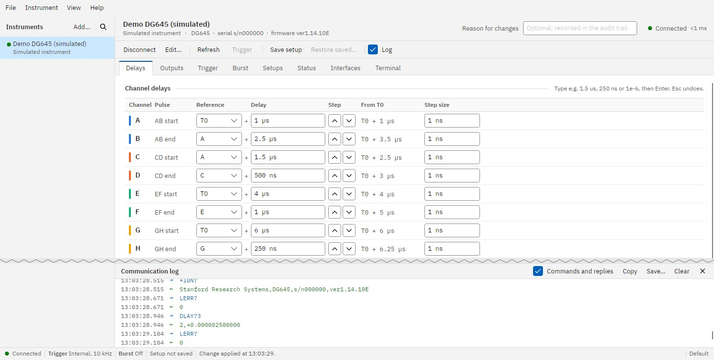

Tempo.exe. If Windows says it protected your PC, choose More info ▸ Run anyway.Tempo-Portable.exe keeps its files beside it..deb (Arch: the PKGBUILD), then start Tempo from the menu or run tempo-dg645.1.5 us, 250 ns, 10 kHz), then press Enter or click anywhere else.
1 2 3 4 5 6 7 8 9 10If anything goes wrong, a coloured alert bar appears across the top of the window (see side 2).
.tempo): keep one per experiment or lab with File ▸ New / Open / Save configuration as. The last one opens automatically next time.Tempo compares the instrument with its saved setup. If they differ, it lists what is different and asks you to choose:
Load saved setup puts your saved settings on the instrument. Keep instrument settings leaves it as it is.
Tick Remember my choice to do the same every time (change it later with Edit…).
Choose the trigger Source on the Trigger page.
Each channel A–H fires a set delay after its reference: T0 (the start of every cycle) or another channel. Each output pulse runs from one channel to the next: AB starts at A and ends at B, and likewise CD, EF and GH.
Example: A = T0 + 1 us, B = A + 2.5 us gives an AB pulse 2.5 µs wide, starting 1 µs after T0.
Because B follows A, moving A moves the whole pulse.
| Time | ps ns us (or µs) ms s, e.g. 250 ns, 1.5us, 1e-6 |
| Frequency | mHz Hz kHz MHz, e.g. 10 kHz, 2.5k |
| Voltage | mV V, e.g. 2.5 V, 800 mV, -0.8 |
A number on its own is in seconds, hertz or volts. Always use a full stop for the decimal point.
While connected, Tempo checks the instrument every second. The dot by its name shows the result:
Problems appear in an alert bar at the top of the window, with a sound on Windows (View ▸ Alert sound):
Show jumps to the instrument, and × dismisses the alert. Alerts are also kept in the audit trail.
| F1 | User guide, at the page you are on |
| Ctrl+N / Ctrl+F | Add an instrument / find on network |
| Ctrl+K / Ctrl+Shift+K | Connect / disconnect |
| F2 | Edit the selected instrument |
| Ctrl+S / Ctrl+R | Save setups / restore the saved setup |
| Ctrl+O | Open a configuration |
| F5 | Read every setting again |
| Ctrl+T | Trigger, or arm |
| Ctrl+L | Show or hide the communication log |
| Enter / Esc | In a field: send the value / undo |
| Will not connect | Check the IP address on the front panel and that the computer is on the same network, close other programs using the instrument, or try Find on network. |
| Value refused | Read the message under the red field (e.g. Illegal delay). Press Esc to go back. |
| Front panel locked | Disconnect, or Go to local on the Interfaces page. |
| Pages may be out of date | Shown after typing commands in the Terminal. Click it or press F5. |
| Audit trail not written | The audit folder cannot be reached. Records wait and are written once it is back. |